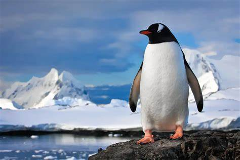
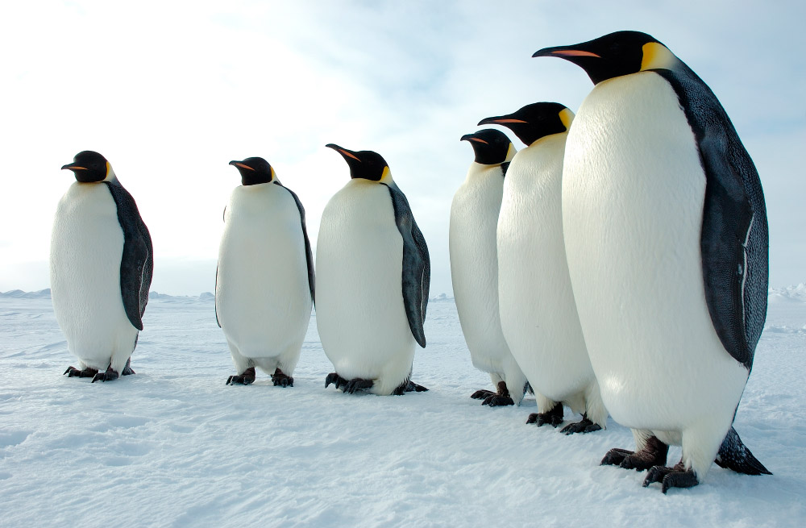

Pingüino
Ave palmípeda marina de la familia de las esfenisciformes, no voladora, de color blanco y negro, de gran tamaño, figura erguida y alas adaptadas para bucear, que vive en el hemisferio sur, principalmente en las regiones polares.
 